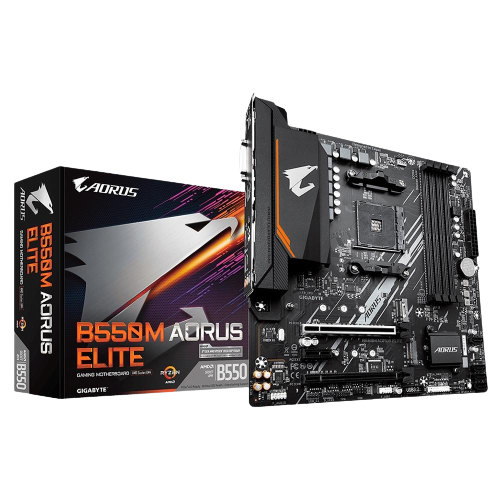
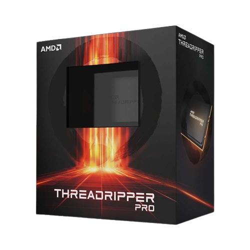
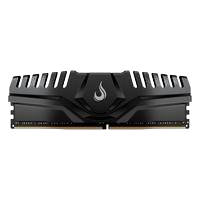
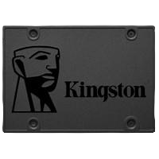
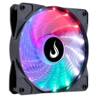

Placa Mãe
A placa-mãe é o componente principal do computador e conecta todos os outros componentes, incluindo o processador, memória RAM e placa de vídeo. A placa-mãe é responsável por controlar a comunicação entre esses componentes e é geralmente escolhida com base no tipo de processador que você planeja usar.
Processador
O processador, também conhecido como CPU, é o "cérebro" do computador. É responsável por executar cálculos e operações, permitindo que o computador realize tarefas como navegar na web, executar jogos e executar aplicativos de produtividade. Os processadores vêm em diferentes velocidades e números de núcleos, e podem ser escolhidos com base na finalidade do computador e do orçamento disponível.
Placa de Vídeo

A placa de vídeo, também conhecida como GPU, é responsável por processar e exibir gráficos em um computador. Eles são usados para jogos, edição de vídeo e outras tarefas que exigem um alto desempenho gráfico. As placas de vídeo vêm em diferentes capacidades e são escolhidas com base nas necessidades do usuário.
Memória RAM
A memória RAM é um tipo de armazenamento temporário usado pelo computador para armazenar dados e informações enquanto o computador está em uso. A quantidade de RAM que você precisa depende do tipo de tarefas que você executa em seu computador. Mais RAM permite que você execute mais aplicativos ao mesmo tempo e aumenta a velocidade do computador.
HD/SSD
O HD (disco rígido) e o SSD (unidade de estado sólido) são tipos de armazenamento permanente em um computador. O HD é um tipo mais antigo e mais lento de armazenamento, mas é geralmente mais barato e tem mais capacidade de armazenamento. O SSD é mais rápido e mais confiável, mas também mais caro e tem menos capacidade de armazenamento. Eles são escolhidos com base nas necessidades de armazenamento e no orçamento disponível.
Cooler
O cooler é um componente que ajuda a manter o processador e outros componentes do computador resfriados. Eles vêm em diferentes tamanhos e capacidades, e são escolhidos com base no tipo de processador e no gabinete do computador.